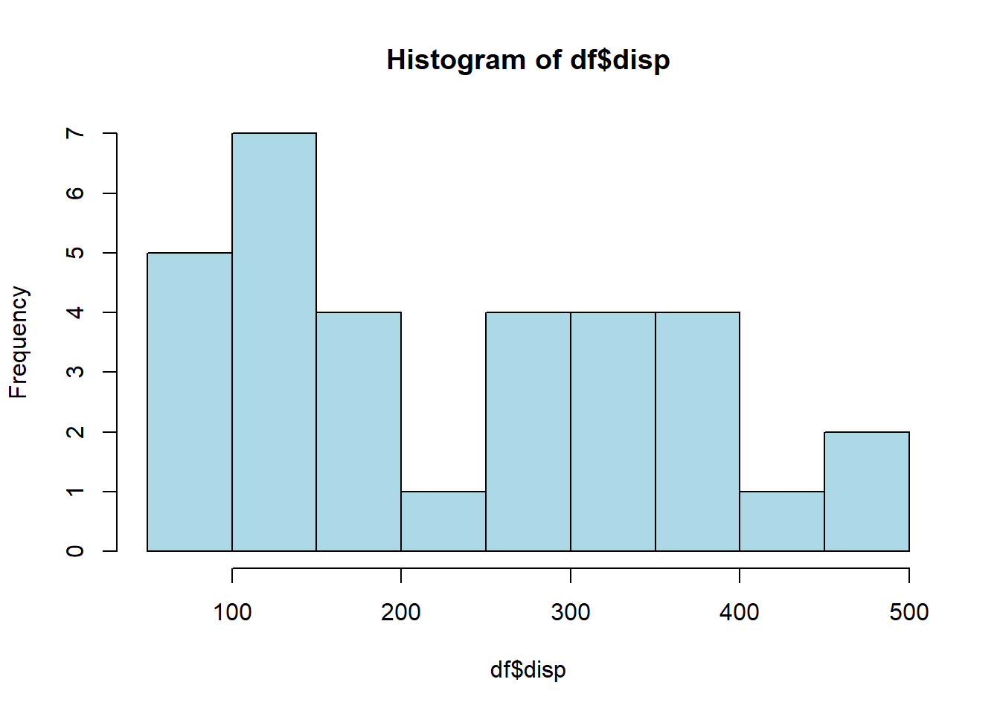
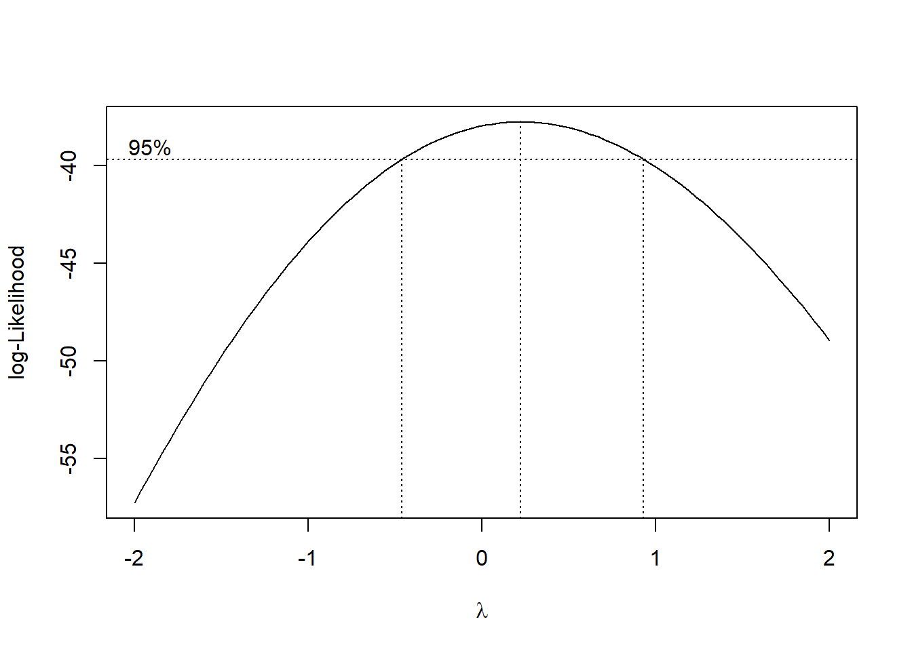
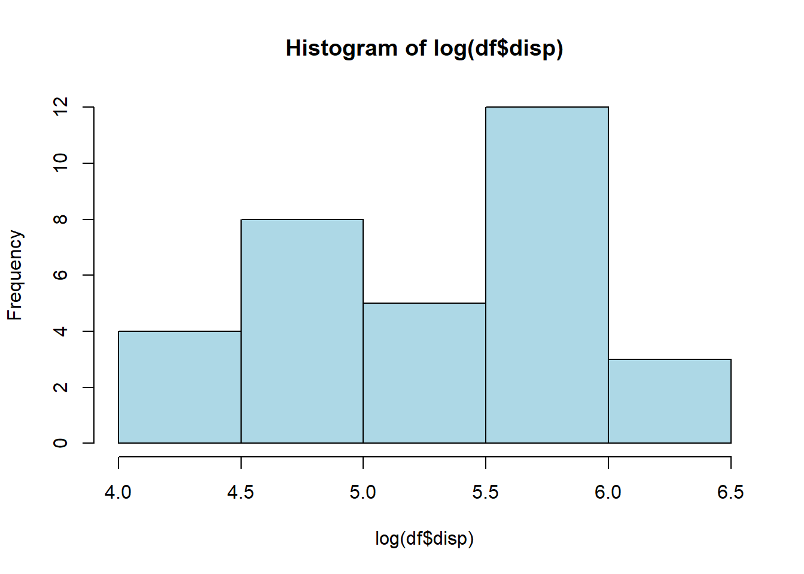
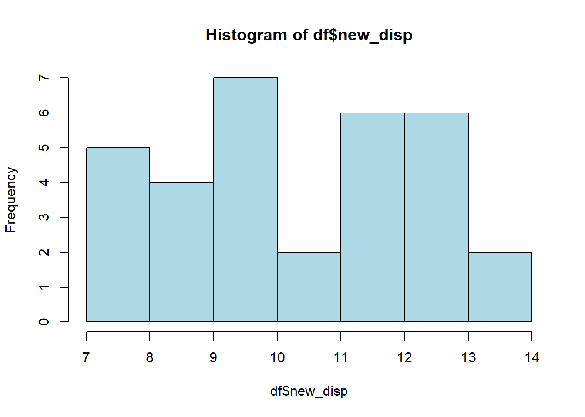

Одним из решений может служить использование семейства преобразований Бокса-Кокса (Box-Cox). Данное семейство реализовано функцией boxcox из пакета “MASS”. Оно позволяет выбрать наилучшую технику, для приближения данных к нормальному виду. Для использования функции boxcox есть два варианта, первый - это получить наилучший метод для преобразования распределения одной переменной к нормальному виду, второй - получить наилучшее преобразование в линейной регрессии, что приблизит распределение остатков к более нормальному виду (данный метод будет детально рассмотрен в разделе линейной регрессии в будущем). Функция boxcox позволяет получить как визуализацию значения \(λ\), так и получить точное значение, которое можно подставить и преобразовать вручную. На практике рекомендуется выбирать значение из таблицы, а не точное значение, если расчетный параметр преобразования близок к одному из значений предыдущей таблицы, поскольку значение из таблицы проще для понимания.
Таблица значений трансформаций
λ
Трансформация
-2
1/x^2
-1
1/x
-0.5
1/x^0.5
0
log(x)
0.5
x^0.5
1
x
2
x^2
Рассмотрим первый случай, когда нам нужно приблизить распределение одной переменной к нормальному виду:
df <- mtcars# install.packages("MASS") если не установлен пакетlibrary(MASS)hist(df$disp, col ="lightblue", border ="black") # распределение отклоняется от нормального

# Необходимо вычислить линейную модель с помощью функции lm и передать ее # функции boxcox, чтобы определить соответствующую «лямбду»x <- df$disp # запишем значение столбца disp в отдельную переменную хboxcox(lm(x~1))

Нас интересуют те горизонтальные пунктирные линии, которые отражают 95% доверительный интервал (пересекают горизонтальную пунктирную линию). В нашем случае подходящая пунктирная линия ближе всего находится к нулю, а значит, исходя из таблицы значений трансформаций, стоит воспользоваться натуральным логарифмом для преобразования переменной disp.
hist(log(df$disp), col ="lightblue", border ="black")

Стоит сказать, что значение вертикальной пунктирной линии лишь находится близко к нулю, так что нас может заинтересовать значение точной лямбды, выполняется это следующим образом:
b1 <-boxcox(lm(x~1)) # запишем значения преобразования boxcox в отдельную переменную
lambda <- b1$x[which.max(b1$y)] # находим значение лямбдыlambda
[1] 0.2222222
df$new_disp <- (x^lambda -1) / lambda # создание преобразованной переменной disp в исходный data framehist(df$new_disp, col ="lightblue", border ="black")

Проверим значения через Шапиро-Уилка
shapiro.test(df$disp)
Shapiro-Wilk normality test
data: df$disp
W = 0.92001, p-value = 0.02081
shapiro.test(log(df$disp))
Shapiro-Wilk normality test
data: log(df$disp)
W = 0.93477, p-value = 0.05327
shapiro.test(df$new_disp)
Shapiro-Wilk normality test
data: df$new_disp
W = 0.93766, p-value = 0.06426
Как итог, при преобразовании переменной disp основная гипотеза о нормальном распределении не отвергается, так как \(p-value > 0.05\), при этом наибольшее \(p-value\) получилось при использовании точной лямбды.
Нормальность не панацея!
Преобразовывать переменные стоит только тогда, когда нормальность распределения необходима для выбранных нами методов и заменить их на другие не представляется возможным. Если же возможно использовать методы анализа, которые не требуют нормального распределения, вероятно стоит воспользоваться ими. Преобразования переменных плохи тем, что теряется интерпретируемость результата. Особенно для социологических исследований это будет актуально, так как зачастую исследовательской задачей выступает именно поиск связей, понимание их логики и природы, а не предсказательная сила модели. Компромиссом может выступать логарифмирование, так как оно позволяет хоть как-то сохранить интерпретацию исходной переменной. Распишу более подробно, как интерпретировать результаты логарифмирования переменных.
2 О логарифмическом преобразовании переменных
Итак, мы уже выяснили, что логарифм позволяет приблизить распределение переменной к нормальному виду, а в случае построения линейной модели - приблизить ее к линейности. Логарифм особенно актуален для линейных моделей, его довольно легко проинтерпретировать, для этого нужно более детально посмотреть на математические основы регрессии:
\[y_1 = b_0 + b_1*x1\]
\[y_2 = b_0 + b_1*x2\]
Будем считать, что \(x_2 > x_1\), то есть \(x_2\) это следующее значение на единицу больше. Как увеличилось значение зависимой переменной? Решаем уравнение: \(y_2-y_1= b_1(x_2-x_1)\), различие между \(x_2\) и \(x_1\) равняется 1 (\(\Delta = 1\)).
Теперь перейдем к интерпретации логарифма:
\[log(y_1) = b_0 + b_1*log(x1)\]
\[log(y_2) = b_0 + b_1*log(x2)\]
Будем всё так же считать, что \(x_2 > x_1\). Как же теперь увеличится значение зависимой переменной? Решим похожее уравнение, как решали до этого: \(log(y_2)-log(y_1)=b_1(log(x_2)-log(x_1))\), из этого получается, что \(log(\frac{y_2}{y_1})=b_1*log(\frac{x_2}{x_1})\), после чего перенесём \(b_1\) в степень и получим \(log(\frac{y_2}{y_1})=log(\frac{x_2}{x_1})^{b_1}\). Конечное решение приводит к \(\frac{y_2}{y_1} = (\frac{x_2}{x_1})^{b_1}\)!
Таким образом, оказывается, что коэффициент \(b_1\) в регрессии, где у нас трансформирована зависимая и независимая переменная как натуральный логарифм, показывает, насколько процентов увеличится значение зависимой переменной, при условии, что предиктор увеличится на 1%!
Пример доказательства:
мы имеем переменную \(x\) с диапазоном значений \([0; 200]\)
регрессионное уравнение выглядит следующим образом: \(log(y) = b_0 + 3*log(x)\)
нам нужно узнать, как изменится \(y\), если \(x\) изменится на 1%, то есть: \[x_1 = 100\]
Увеличение переменной hp действительно ведет к уменьшению переменной mpg. Однако интересно то, что по результатам линейной регрессии мы знаем, что при увеличении hp на 1% значение mpg уменьшается на 0.5%, то есть чем значение hp больше, тем должно произойти больше изменений, чтобы mpg уменьшился на 0.5%. Это и говорит о том, что у нас нелинейная взаимосвязь и она постепенно угасает.
Мы рассмотрели случай интерпретации, когда зависимая и независимая переменная были взяты в логарифм, остальные случаи и способы их интерпретации приведены в таблице (за коэффициент предиктора для примера возьмем 0.5):
Интерпретация коэффициентов в зависимости от логарифмического преобразования
Формула
Интерпретация
lm(log(y)~log(x), df)
при единичном увеличении предиктора x на 1%, зависимая переменная y увеличивается на 0.5%
lm(y~log(x), df)
при единичном увеличении предиктора x на 1%, зависимая переменная y увеличивается на 0.5
lm(log(y)~x, df)
при единичном увеличении предиктора x, зависимая переменная y увеличивается на 0.5%